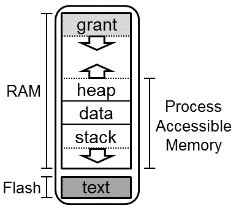
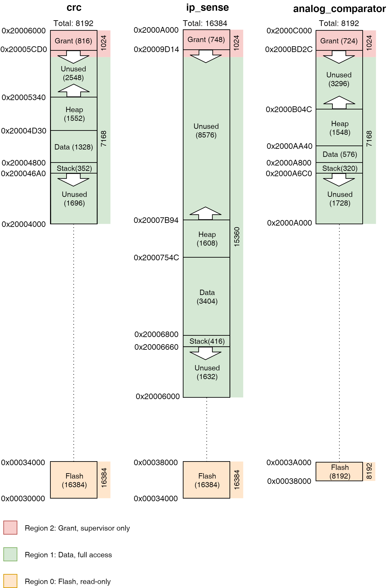

Memory Layout
This document describes how the memory in Tock is structured and used for the kernel, applications, and supporting state.
Tock is intended to run on microcontrollers like the Cortex-M, which have
non-volatile flash memory (for code) and RAM (for stack and data) in a single
address space. While the Cortex-M architecture specifies a high-level layout of
the address space, the exact layout of Tock can differ from board to board.
Most boards simply define the beginning and end of flash and SRAM in their
layout.ld file and then include the generic Tock memory
map.
Flash
The nonvolatile flash memory holds the kernel code and a linked-list of sorts of process code.
Kernel code
The kernel code is split into two major regions. The first is .text, which
holds the vector table, program code, initialization routines, and other
read-only data. This section is written to the beginning of flash.
The second major region following up the .text region is the .relocate
region. It holds values that need to exist in SRAM, but have non-zero initial
values that Tock copies from flash to SRAM as part of its initialization (see
Startup).
Process code
Processes are placed in flash starting at a known address which can be
retrieved in the kernel using the symbol _sapps. Each process starts with a
Tock Binary Format (TBF) header and then the actual application binary.
Processes are placed continuously in flash, and each process's TBF header
includes the entire size of the process in flash. This creates a linked-list
structure that the kernel uses to traverse apps. The end of the valid processes
are denoted by an invalid TBF header. Typically the flash page after the last
valid process is set to all 0x00 or 0xFF.
RAM
The RAM holds the data currently being used by both the kernel and processes.
Kernel RAM
The kernel RAM contains three major regions:
- Kernel stack.
- Kernel data: initialized memory, copied from flash at boot.
- Kernel BSS: uninitialized memory, zeroed at boot.
Process RAM
The process RAM is memory space divided between all running apps.
A process's RAM contains four major regions:
- Process stack
- Process data
- Process heap
- Grant
The figure below shows the memory space of one process.

Hardware Implementations
SAM4L
The SAM4L is a microcontroller used on the Hail and Imix platforms, among others. The structure of its flash and RAM is as follows.
Flash
| Address Range | Length (bytes) | Content | Description |
|---|---|---|---|
| 0x0-3FF | 1024 | Bootloader | Reserved flash for the bootloader. Likely the vector table. |
| 0x400-0x5FF | 512 | Flags | Reserved space for flags. If the bootloader is present, the first 14 bytes are "TOCKBOOTLOADER". |
| 0x600-0x9FF | 1024 | Attributes | Up to 16 key-value pairs of attributes that describe the board and the software running on it. |
| 0xA00-0xFFFF | 61.5k | Bootloader | The software bootloader provides non-JTAG methods of programming the kernel and applications. |
| 0x10000-0x2FFFF | 128k | Kernel | Flash space for the kernel. |
| 0x30000-0x7FFFF | 320k | Apps | Flash space for applications. |
RAM
| Address Range | Length (bytes) | Content | Description |
|---|---|---|---|
| 0x20000000-0x2000FFFF | 64k | Kernel and app RAM | The kernel links with all of the RAM, and then allocates a buffer internally for application use. |
Overview
The following image gives an example of how things are currently laid out in practice. It shows the address space of both flash and RAM with three running applications: crc, ip_sense, and analog_comparator.
